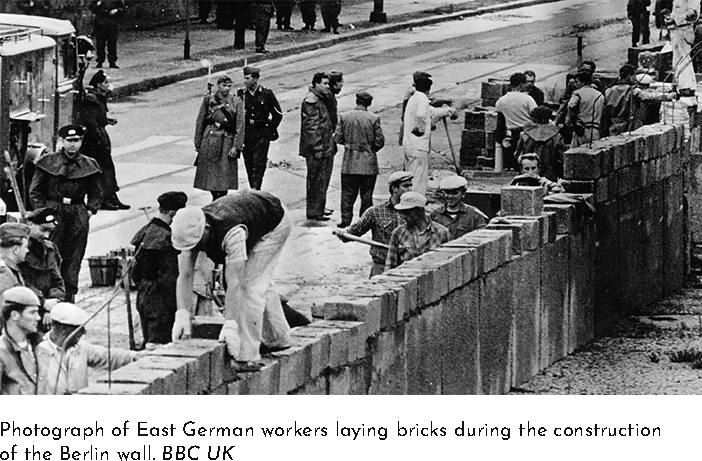
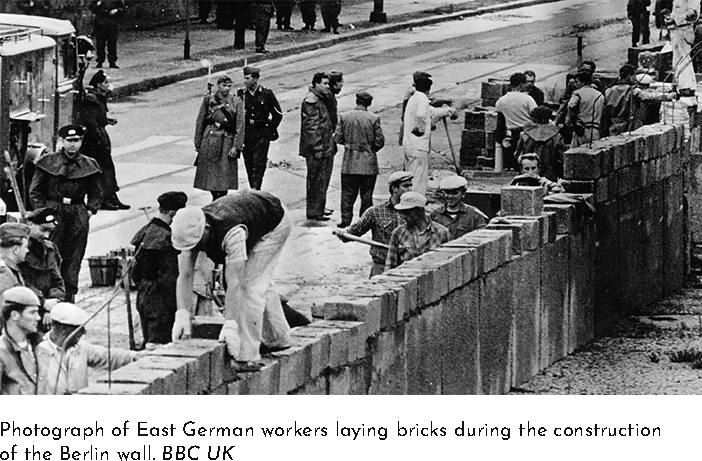

☰ Menu

. The Fall of
. The Berlin Wall
. By Aiden Schneeberg, John Medina, and Julius Rodriguez
What was The Berlin Wall?
The Berlin Wall was a divider that spanned through Berlin,
with the intention of dividing Berlin into two hemispheres:
east and west. Although there is no percise number, it is said
that the wall is anywhere from eighty-seven to ninety-six miles
long. The wall stood for twenty-eight years, from August 13, 1961
until it was eventually deconstructed on November 9, 1989.
The main purpose of the wall was to prevent migration from
east to west Berlin, and was heavily armed with gaurds to
enforce such. Within Germany today it is veiwed as a turning
point, as its construction and deconstruction marked the
begining and end of the cold war, and in turn the start and
end of an era.
 

 "
"
Why was The Berlin Wall put up?
After World War II Germany was divided into two states to be
managed by the different entities that composed the Allied
Forces: The United States, France, Great Britian, and The
Soviet Union. The Soviet Union took control over the eastern
hemisphere and made it into a poorly managed communist state,
while the other three Allies took control of the western
hempishere and made it into a capitalistic democracy. Many
Germans qucikly realized that living in the east was
significantly worse than the west and millions started to
migrate into west Germany. This included the majority of
skilled workers and quickly started to threaten the fragile
economic state of eastern Germany. In the middle of all of
this, literally and figuratively, was Berlin, a centeral city in
east Germany that was divided just as the rest of Germany,
half of Berlin being controlled by the west. This allowed people to go into west Berlin and easily migrate to other parts of the west,
even from the heart of east Germany. on August 13, 1961, the Soviet Union had enough, and The Berlin Wall was constructed, at its
peak ranging about ninety miles long and twelve feet tall. The purpose of the wall was to limit transportation in and out of west
Berlin, making it significantly harder to leave east Germany.